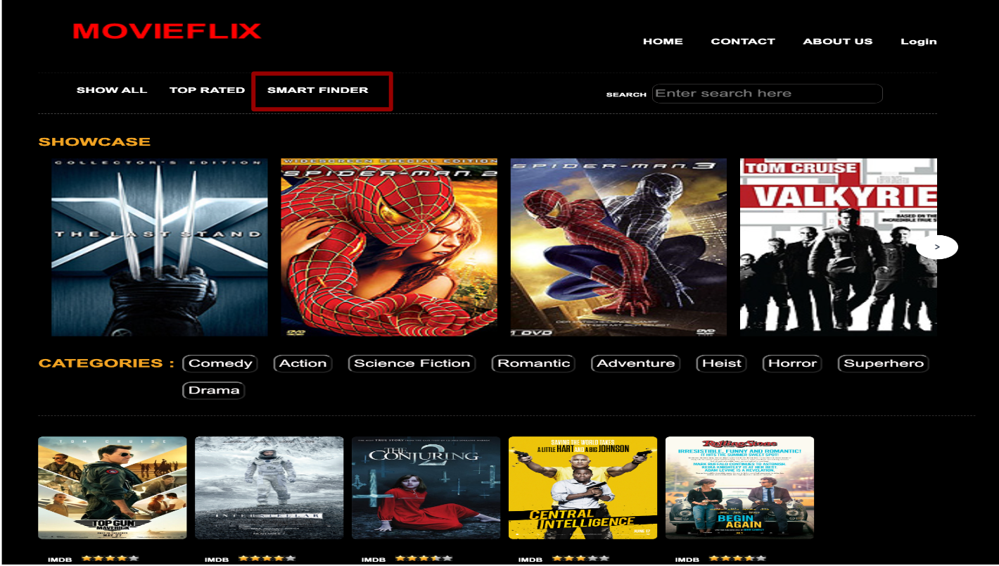
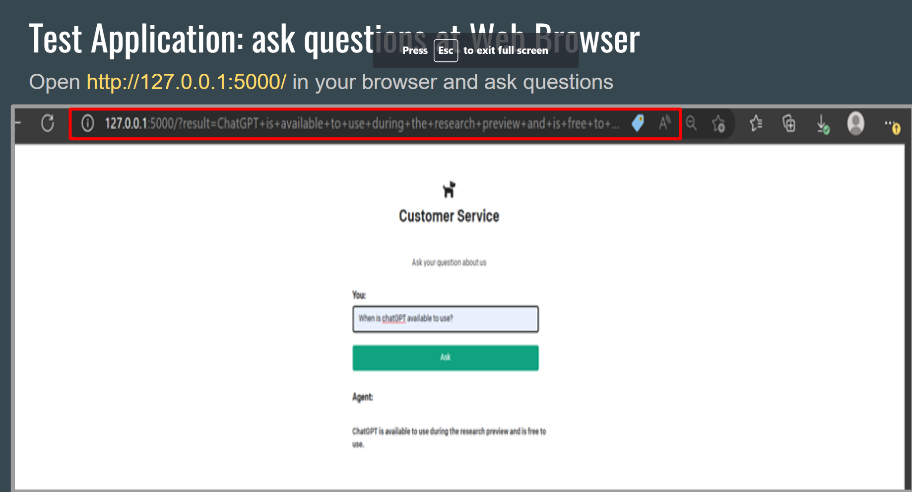
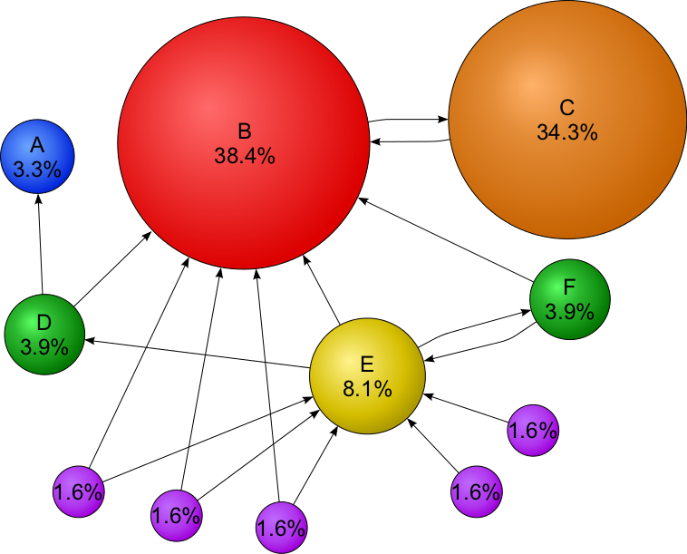
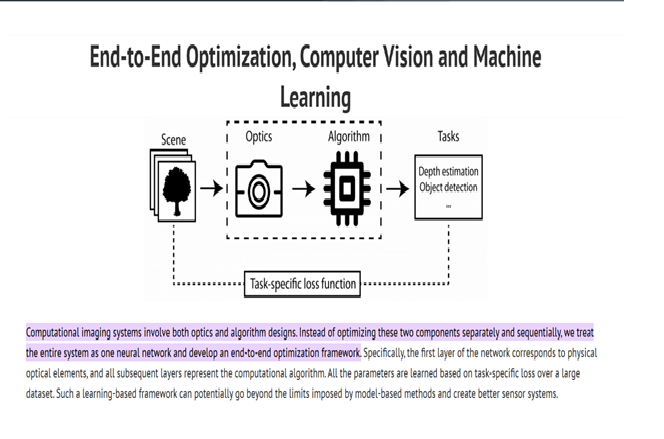
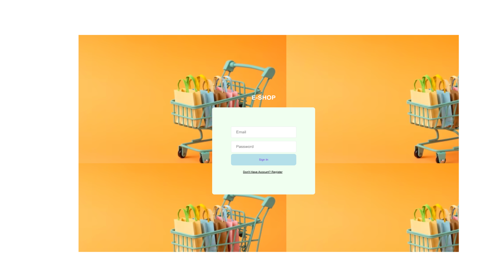
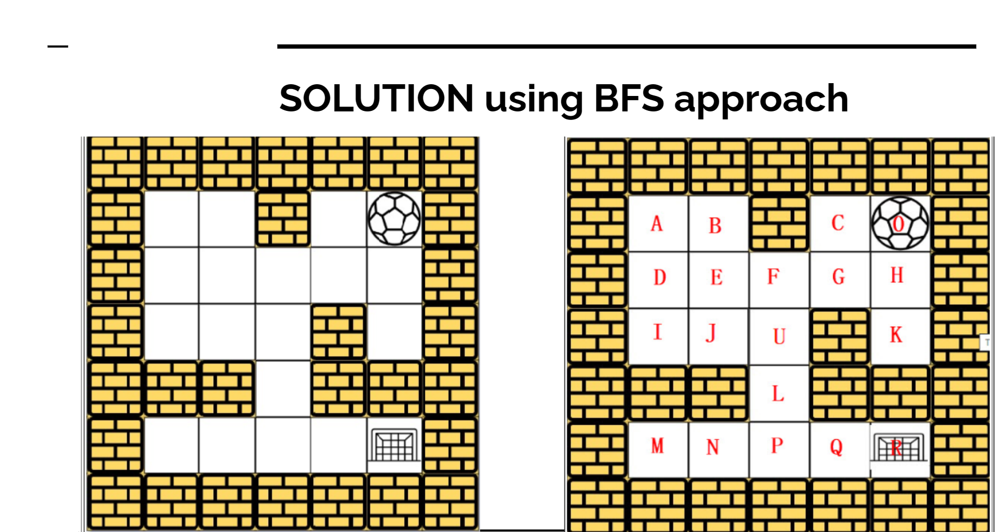
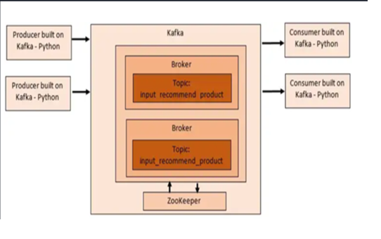

April, 2023
Lead team of 3 developers in Web Application.Entire website UI design usings HTML5, CSS3, BOOTRAP, React.Provide Recommendations based on user previous search history using ML Python.Implemented Payment Feature: Razor Pay.


Use ChatGPT to build a web-based system that can answer questions about a website.Implemented UI interface using Flask Framework in Python. Integrated with implementation of OpenAI API’s.

Using Page Rank Algorithm is also used by google search engine to rank websites in their search engine result. Solved the problem manually the implemented Page rank algorithm with Pyspark on Google Cloud Platform (GCP). implemented Page rank algorithm with Scala on Google Cloud Platform (GCP).

Predict Median of House Values in California based on features from the district. Using Google Colab Jupyter Notebook to go through the whole process of the end-to-end project. Algorithm used: Linear Regression, Decision tree, Random Forest, Cross Validation.Process: Setup Tensor flow VM Select data, train data, validate data, test data to analyze best Model.

Implemented e-commerse website using Agile Methodology. Platform where users can buy/sell old and new items like books, electronics etc.

Implemented a maze-solving algorithm using Breadth First Search (BFS) approach and demonstrated manual solution for finding shortest path in unclear routes(like wheeled Robots move in hotel space), showcasing potential business benefits through cost and time analysis. Developed and applied a Depth First Search (DFS) algorithm for solving mazes with clear spaces using a tree and demonstrated manual solution for unclear routes(like Robots without wheels), using a matrix, with a focus on cost and time analysis for potential business benefits.

Developed and implemented an efficient real-time streaming data pipeline using Apache Kafka for an e-commerce platform, enabling near real-time recommendations for events created by active users. Installed and configured Java and PySpark on Google Cloud Platform, enabling the implementation of real-time data processing and analytics pipelines. Developed and deployed a Spark Streaming application in Python for real-time word count analysis on streaming data, enhancing the platform's capabilities for real-time analytics.